Практика 7.1 · n8n
Ассистент
для код-ревью
Две модели, история проверок
и комментарии к диапазонам кода
Материалы для сдачи
Экспорты сценариев и тестовые PR
| Версия | JSON | Запуски и результаты |
|---|---|---|
| Базовая Общий текст ревью | base-review.json ↗ | RouteFinder · PR #6 ↗ |
| С точечными комментариями Комментарии к диапазонам строк | inline-review.json ↗ | RouteFinder · PR #5 ↗ |
Далее: основная и вторая модель → запись в Data Table → проверка повторного запуска для каждой версии.
01 · Выбор модели
Две модели через OpenCode Go
Используются разные модели, предоставляемые OpenCode Go. Обе подключены через ноду OpenAI Chat Model к общему OpenAI-совместимому API.
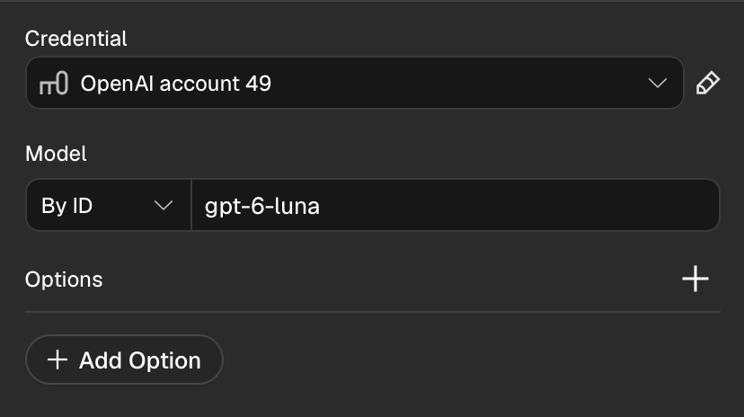
/make_ai_review → gpt-6-luna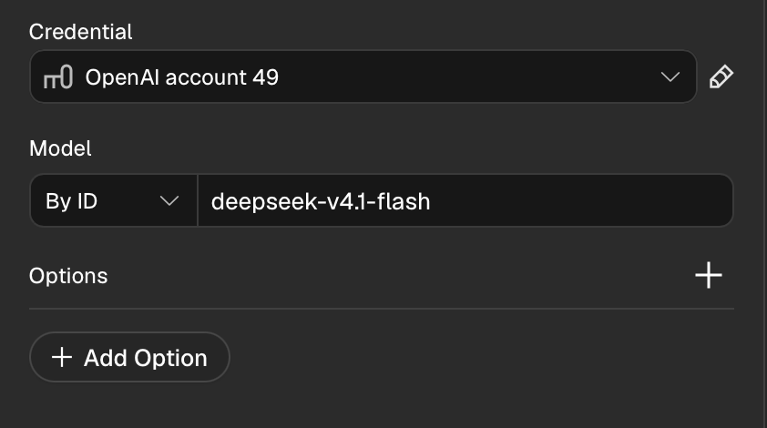
/make_other_ai_review → deepseek-v4.1-flash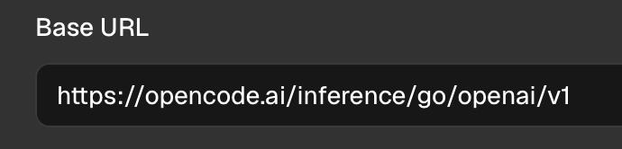
01 · Базовая версия · PR #6
Базовый сценарий
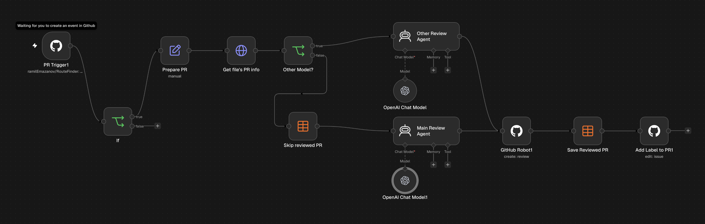
↗Тестовый PR #6 ↗ · Открытие PR и /make_ai_review выбирают основную модель; /make_other_ai_review — вторую.
01 · Базовая версия · Основная модель
Основная модель: запуск и результат
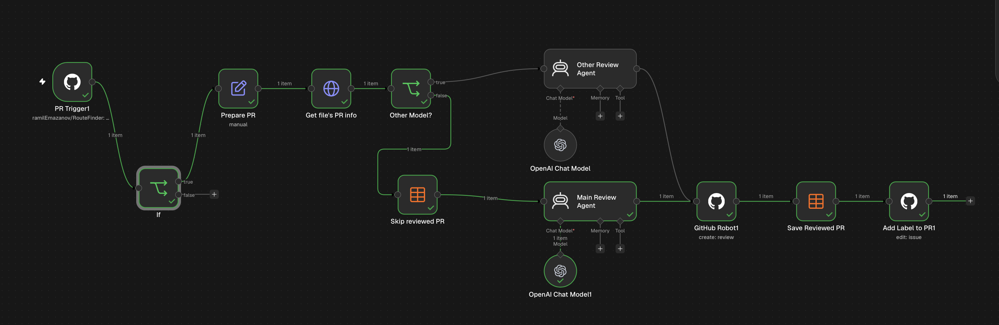
↗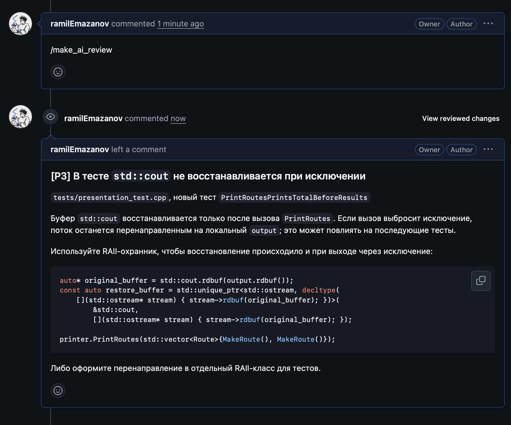
↗Модель gpt-6-luna · Открыть результат в PR #6 ↗
01 · Базовая версия · Вторая модель
Вторая модель: команда и результат
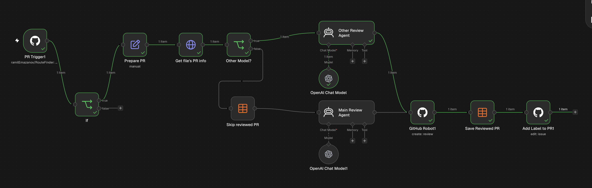
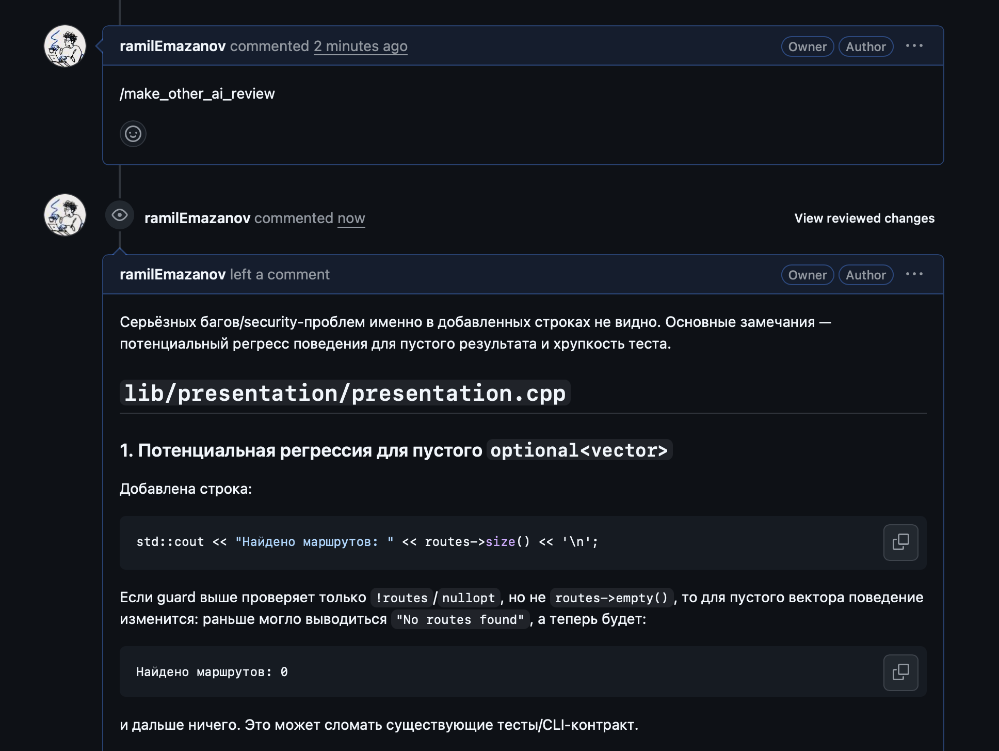
↗deepseek-v4.1-flash отметила потенциальную регрессию вывода для пустого результата; основная модель сосредоточилась на восстановлении потока в тесте. PR #6 ↗
01 · Базовая версия · Состояние
PR #6 сохранён в Data Table
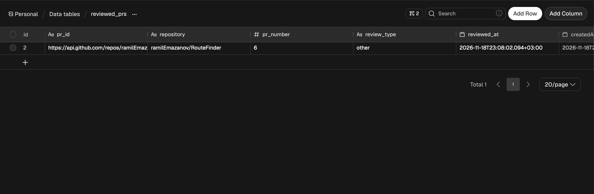
↗Save Reviewed PR выполняет Upsert после публикации. Ключ pr_id — API URL PR; также хранятся репозиторий, номер, тип ревью и время.
01 · Базовая версия · Повторный запуск
Повтор остановлен на проверке таблицы
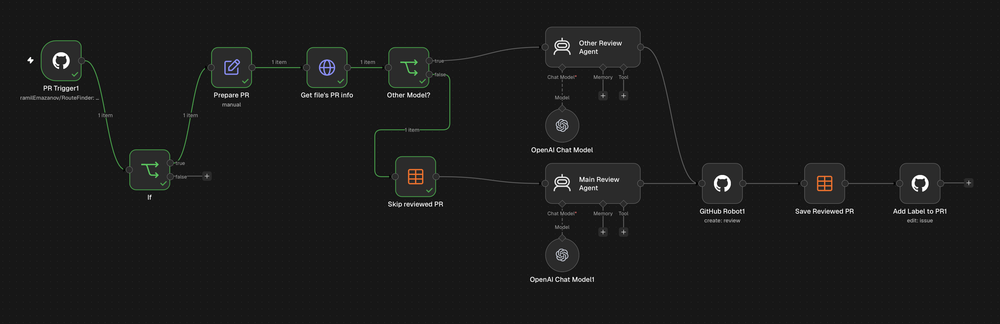
↗Операция If Row Does Not Exist проверяет pr_id. Если запись уже есть, она не передаёт данные дальше в основную ветку.
01 · Базовая версия · Результат проверки
Повторная команда без нового ревью
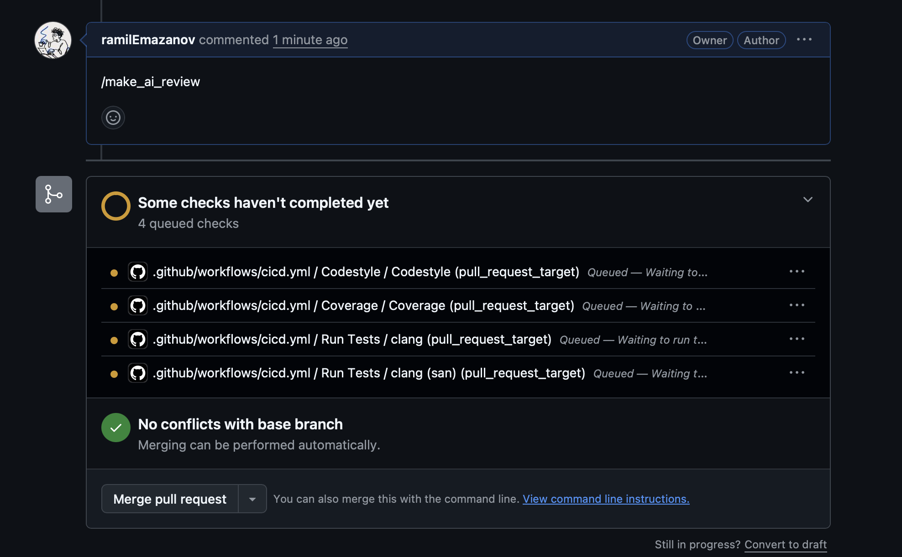
↗Этот скрин рассматривается вместе с предыдущим Execution: отсутствие результата объясняется проверкой Data Table. Очередь GitHub Actions не относится к n8n. PR #6 ↗
Версия со звёздочкой · PR #5
Комментарии
к блокам diff
Один комментарий на блок.
Начало и конец диапазона вычисляет код.
02 · Точечная версия · Основная модель
Основная модель: точечное ревью
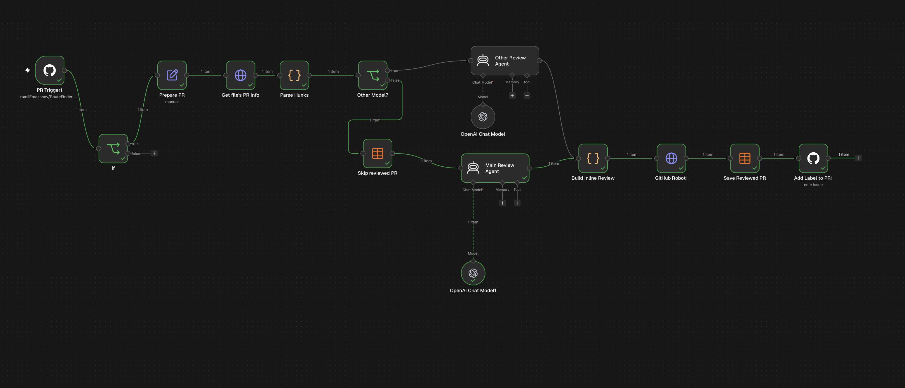
↗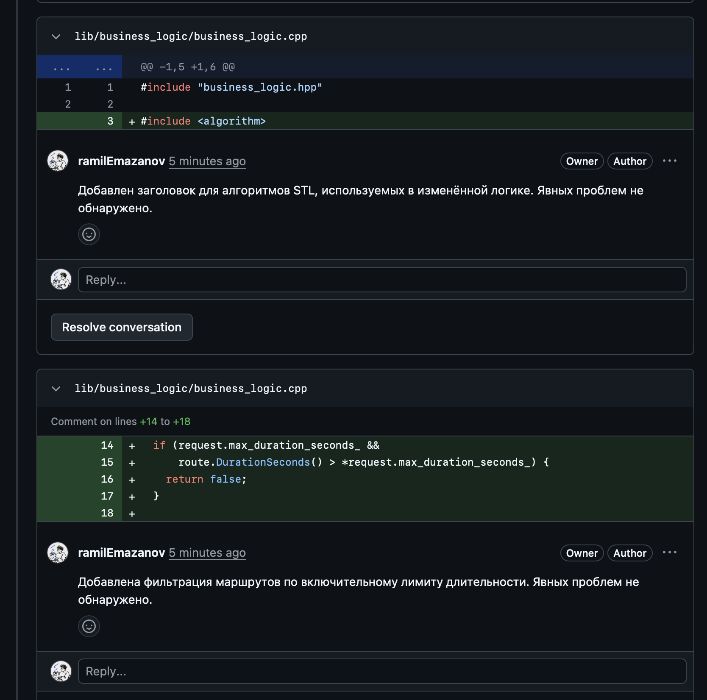
↗Обработка включает блок с одной добавленной строкой и блок из нескольких строк. Files changed · PR #5 ↗
02 · Точечная версия · Вторая модель
Вторая модель: точечное ревью
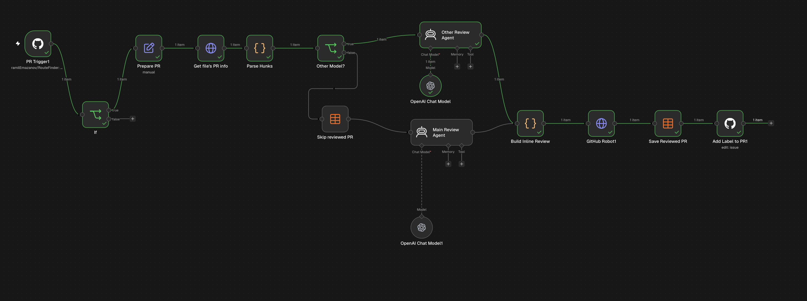
↗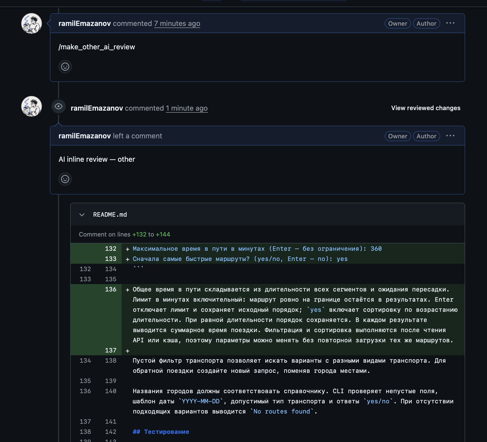
↗Вторая модель использует тот же механизм вычисления диапазонов и публикации. PR #5 ↗
02 · Точечная версия · Состояние
PR #5 сохранён после точечного ревью
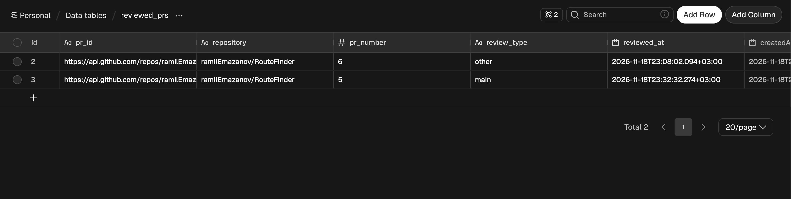
↗Состояние хранится между запусками. Сохранение выполняется после успешной публикации; запись PR #5 может использоваться для блокировки повторного основного ревью.
02 · Точечная версия · Повторный запуск
Повторный /make_ai_review для PR #5
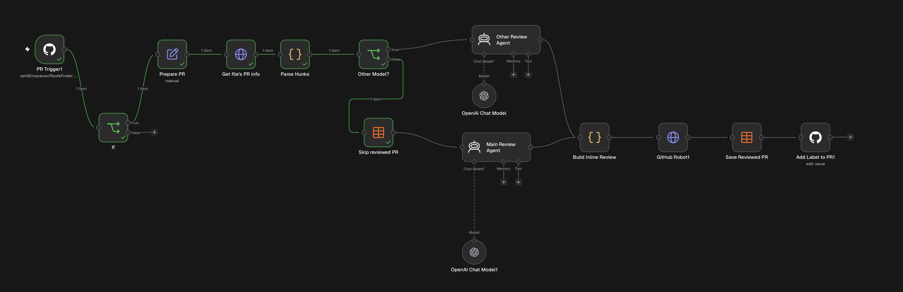
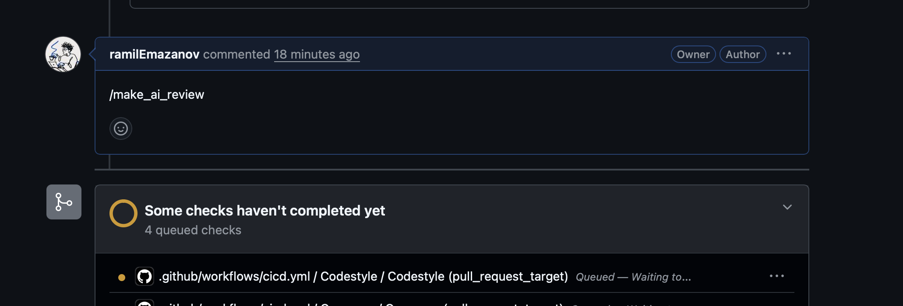
PR уже есть в reviewed_prs: проверка не передаёт данные дальше. PR #5 ↗
02 · Точечная версия · Механизм
Как комментарий относится ко всему блоку
- Parse Hunks выделяет блоки
@@и вычисляет первую и последнюю изменённые строки. - AI Agent пишет текст по ID блока.
- Build Inline Review проверяет ответ и добавляет
path,start_line,line, сторону diff. - GitHub Robot1 отправляет массив комментариев одним ревью.
Пример диапазона
{
"path": "src/example.cpp",
"start_line": 14,
"start_side": "RIGHT",
"line": 18,
"side": "RIGHT"
}Поля привязки показаны схематично. Для одной строки start_line не передаётся; для чистых удалений используется LEFT.